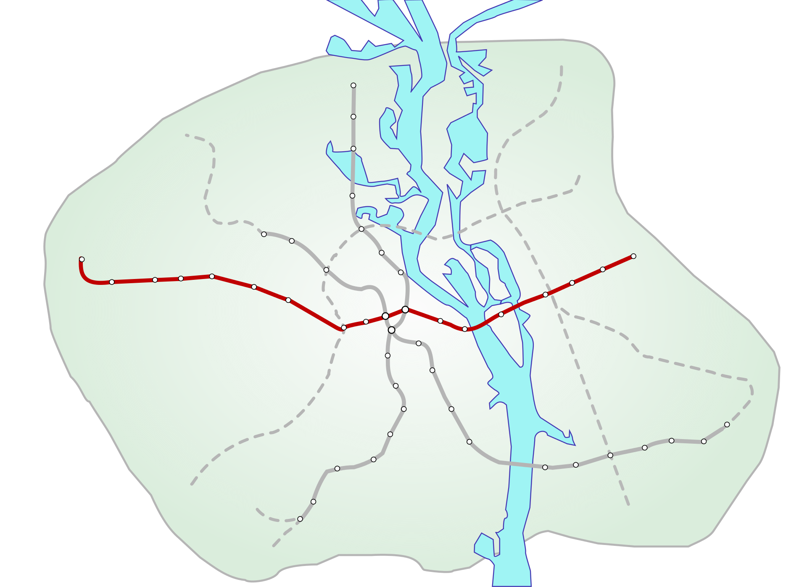

Святошинсько-Броварська лінія

Святошинсько-Броварська лінія |
|
|  | |
Святошинсько-Броварська лінія (також Святошино-Броварська лінія або Червона лінія метро) — історично перша лінія Київського метрополітену. Кількість станцій — 18, довжина лінії — 22,7 км, час проїзду — 38,5 хв.
Нумерація колій: «Академмістечко» — «Лісова» — I, «Лісова» — «Академмістечко» — II.
|
QR-код лінії: |